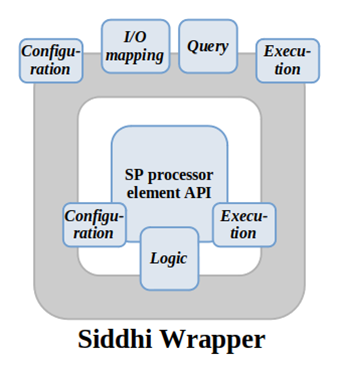

StreamPipes Siddhi-Processor is a component that enables analysis of data streams in a context of CEP (Complex Event Processing) using StreamPipes as underlying platform.
Siddhi was used for its implementation, as it is a tool for building fully-fledged event-driven applications with possibility of Complex Event Processing.
In current version (0.67.0), StreamPipes (SP) offers a Siddhi wrapper which wraps standard library for SP pipeline element creation. It provides mapping of SP pipeline element’s input/output to the Siddhi application’s input/output, as well as means of writing and executing queries that can be customized with user provided parameters during element configuration.
Figure 10: Siddhi wrapper that enables users to utilize CEP inside StreamPipes element
Currently, SP Siddhi wrapper supports part of commonly-used Siddhi EPL functionalities, with the rest of them, as well as other features and extensions, yet to be implemented. In addition, there are a few problems with SP UI and API when Siddhi processor is employed.
This implementation of Siddhi wrapper requires from users to write Siddhi queries as plain String objects. In following version (0.68.0), StreamPipes (SP) will provide object model representation of Siddhi EPL (Event Processing Language) for writing Siddhi queries implemented as a part of SP Siddhi wrapper. Significant changes to the Siddhi wrapper implementation are also expected.
SP Siddhi-Processor's purpose is to extract information and identify meaningful events (opportunities and threats) such as patterns, relationship between events, etc. It would receive its input from SP element(s), execute written query on received data, and forward execution result to other SP element(s).
The goal of this element is to count number of occurrences of interest in a given set of consecutive inputs. This use-case corresponds to the CEP notion of a window, i.e., we want to detect a specific event in a window of inputs. Hence, the resulting query looks like this, with the window size being 5:
define stream InputStream(numerical_parameter int);
from InputStream#window.length(5)[numerical_parameter >= 50]
select count() as count
insert into OutputStream;
This query counts how many inputs had numerical_parameter value greater than 50. Therefore, in this case, numerical_parameter value greater than 50 represents an occurrence of interest.
For this element, window size, parameters of interest and conditions, are fully customizable and can be changed during pipeline editing phase.
Output of this component can be used by other SP pipeline elements to raise an alert, for further processing, visualization, etc.
This component receives input from any element that provides numerical output that is of interest. In the case of test, output from MEWMA is used (count of outliers).
After query execution, it outputs count of inputted values that correspond to the condition.
Since this component is implemented in a way that allows custom values for window length and number of occurrences, a user interaction is required. In essence, when user creates pipeline and employs this component, a corresponding window pops up which prompts user to enter said values.
StreamPipes (and this component, as well) is available for Linux, Windows and Mac OS X.
This component was developed on Linux machine. Docker and Docker Compose are required in order to run pipelines.